LE MATÉRIEL
DE CINÉMA
Comprendre ce que chaque outil fait, pourquoi il coûte ce qu'il coûte, et quand l'utiliser — sans jamais confondre la possession de matériel avec la maîtrise du cinéma.
Le matériel ne fait pas le film. Mais le connaître change tout.
Un réalisateur ou un producteur qui comprend son matériel communique mieux, budgète plus juste, et n'est jamais pris au dépourvu sur un plateau. Ce manuel couvre les quatre grandes familles — plus le son, souvent oublié.
Caméra & Optiques
Le capteur enregistre la lumière. L'objectif contrôle ce qui entre. Les deux ensemble définissent l'image : sa profondeur, sa texture, son rapport au sujet. Chapitres 01 et 02.
Lumière & Machinerie
La lumière est l'atmosphère de la scène. La machinerie détermine comment la caméra se déplace — et chaque mouvement raconte quelque chose au spectateur. Chapitres 03 et 04.
Son, supports & budget
Le son est la dimension la plus sous-estimée par les débutants. Les supports de tournage et les logiques de location complètent la vision d'ensemble. Chapitres 05 à 08.
Neuf chapitres, de la caméra au budget de location.
Clique sur un chapitre pour l'ouvrir. Chacun contient le contenu essentiel et un exercice pratique à faire dans le champ texte fourni.
Avant de commencer — pourquoi connaître le matériel
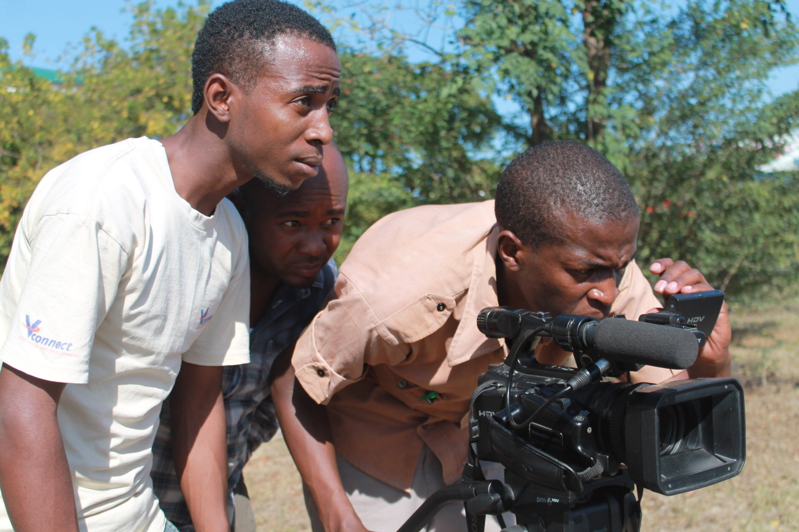
Beaucoup de gens qui travaillent dans le cinéma n'opèrent jamais eux-mêmes une caméra. Le réalisateur cadre rarement ; le producteur ne touche presque jamais au matériel. Et pourtant, comprendre ce matériel change radicalement la qualité de leur travail.
Quand un réalisateur dit "je voudrais quelque chose de plus intime", et que le DP répond "on pourrait passer en 35mm avec une grande ouverture", le réalisateur qui comprend ce que ça signifie — visuellement et économiquement — peut valider ou affiner cette décision en trente secondes. Celui qui ne comprend pas subit une décision technique qu'il ne maîtrise pas. La connaissance du matériel est une forme d'autorité artistique.
Évalue ton point de départ
- Sans chercher, liste les termes techniques liés au matériel de cinéma que tu connais déjà (focale, f/stop, steadicam, 4K…).
- Pour chacun, note si tu peux l'expliquer à quelqu'un de non-initié, ou si tu utilises le mot sans vraiment savoir ce qu'il désigne.
- Reviens à cette liste à la fin du manuel et mesure ce qui a changé.
Les caméras
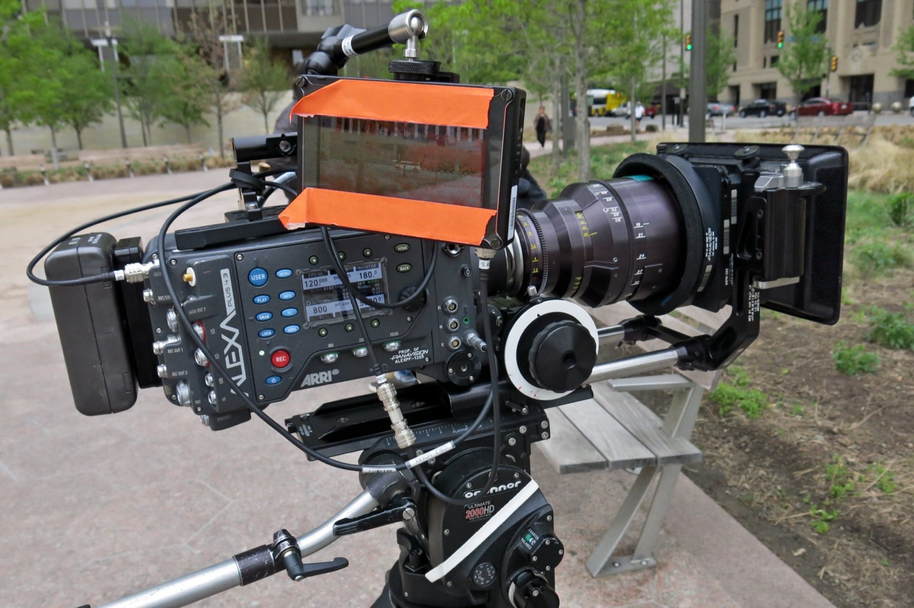
Une caméra est essentiellement un boîtier autour d'un capteur. Ce capteur — la "rétine" de la caméra — transforme la lumière en données numériques. Tout le reste (le boîtier, les menus, les boutons) sert à contrôler comment cette transformation se fait. Quatre caractéristiques définissent un capteur : son format, sa résolution, sa dynamique, et ses performances en basse lumière.
- Format (taille du capteur) — un capteur Super 35 (standard cinéma) capte plus de lumière qu'un capteur Micro 4/3, produit un bokeh plus marqué (flou d'arrière-plan) et une profondeur de champ plus réduite. Plus grand = plus expressif mais aussi plus cher et plus lourd à manœuvrer.
- Résolution — exprimée en K (4K = environ 4 000 pixels en largeur). Plus n'est pas toujours mieux : un 4K bien exposé et colorimétrisé sera souvent plus beau qu'un 8K mal éclairé. La résolution est un argument de vente autant qu'un outil technique.
- Dynamique — capacité à capter simultanément du détail dans les ombres profondes ET dans les hautes lumières. Mesurée en "stops". Les meilleurs capteurs actuels atteignent 15 à 17 stops de dynamique — la plage de latitude entre ce qui est trop noir et ce qui est cramé.
- Basse lumière — certains capteurs tiennent une image propre à 6 400 ISO ou plus. D'autres deviennent inutilisables au-delà de 800 ISO. C'est crucial pour tout tournage sans éclairage artificiel suffisant.
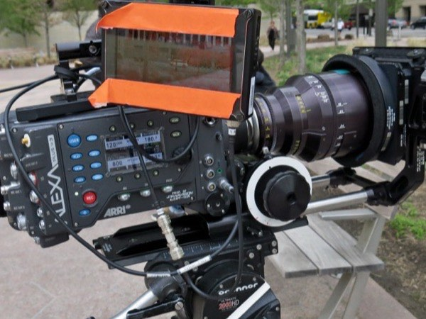
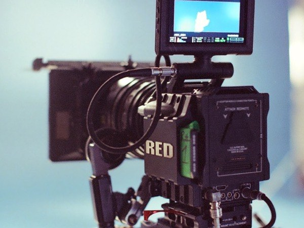
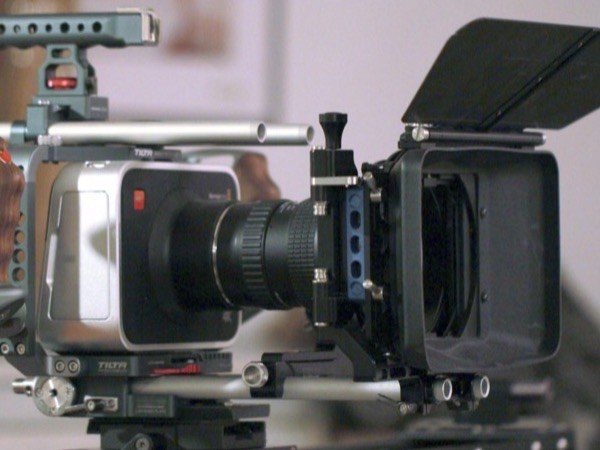
Décoder les specs d'une caméra
- Cherche la fiche technique officielle d'une caméra de ton choix (ARRI, RED, Sony ou Blackmagic — toutes publient leurs specs).
- Identifie : la taille du capteur, la résolution maximale, la dynamique annoncée (en stops), et la sensibilité ISO native.
- En une phrase : à quoi cette caméra semble-t-elle adaptée, et à quoi pas ?
Les optiques
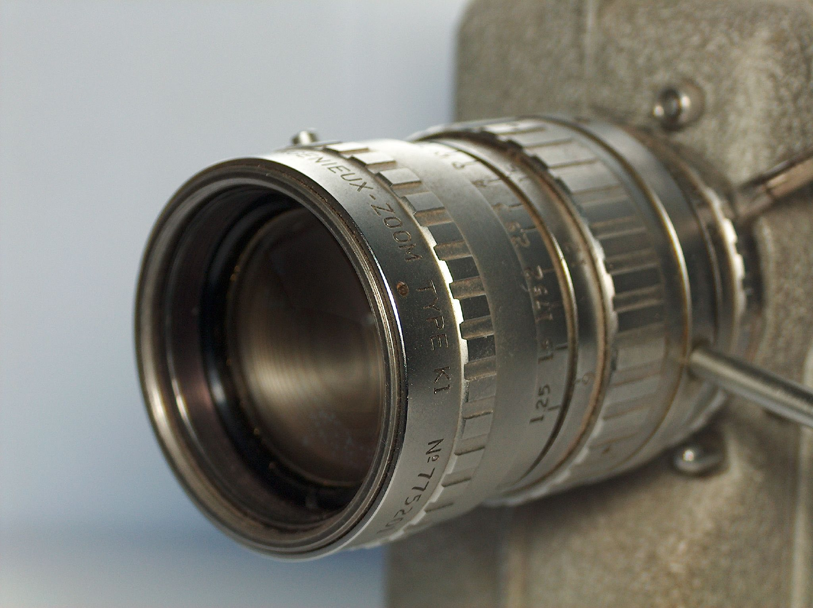
Si le capteur est la rétine, l'objectif est le cristallin. Il contrôle ce qui entre, en quelle quantité, et avec quelle déformation. Un objectif médiocre monte une caméra haut de gamme — une image nette, plate, sans caractère. Un très bon objectif sur une caméra modeste peut produire quelque chose de saisissant. Les directeurs de la photographie disent souvent qu'ils choisissent leurs optiques avant leur caméra.
- Focale — exprimée en millimètres. Un 16mm donne un angle très large (tout entre dans le cadre, grande sensation d'espace). Un 85mm donne un cadre serré, qui comprime la perspective et isole le sujet. La focale, c'est d'abord un point de vue narratif avant d'être un choix technique — voir le manuel Réalisateur pour les valeurs de plan correspondantes.
- Ouverture (f/stop ou T/stop) — mesurée en f/1.4, f/2, f/2.8… Plus le chiffre est bas, plus l'objectif est "ouvert" : il laisse entrer plus de lumière ET réduit la profondeur de champ (le bokeh devient plus marqué). Un f/1.4 en basse lumière est une arme redoutable. Un f/4 en plein soleil est parfaitement adapté.
- Focale fixe (prime) vs zoom — un zoom est pratique (on change l'angle sans bouger la caméra), mais les zooms professionnels sont lourds, chers, et ont généralement une ouverture maximale inférieure aux primes. Une focale fixe est optiquement plus simple, plus légère, souvent plus ouverte, et plus "caractérisée". Les films à gros budget utilisent souvent des séries de primes plutôt qu'un zoom.
- Le "caractère" d'un objectif — deux objectifs de 50mm peuvent donner des images radicalement différentes. Un objectif vintage des années 1970 produit des aberrations optiques légères, un vignettage doux, une texture particulière. Un objectif ultra-moderne sera au contraire d'une netteté clinique. Les DPs choisissent souvent des objectifs "imparfaits" précisément pour leurs défauts.
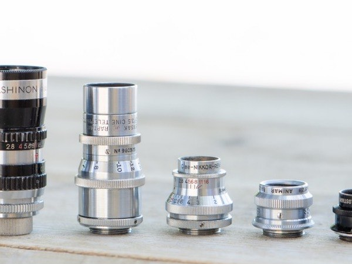
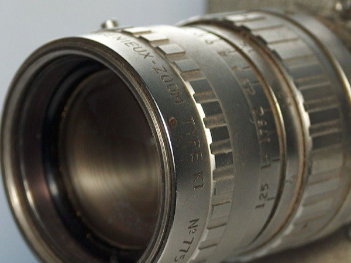
Comprendre l'ouverture par l'observation
- Avec n'importe quel appareil photo ou smartphone en mode manuel, trouve une scène avec un sujet en avant-plan et un fond reconnaissable.
- Fais varier l'ouverture entre ouverte au maximum et fermée. Observe comment la profondeur de champ change.
- Note : à quelle ouverture l'image te semble-t-elle la plus "cinématographique" pour cette scène précise ? Pourquoi ?
La lumière — vue générale
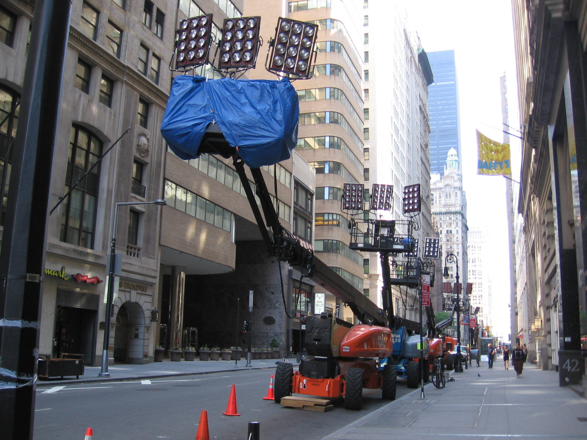
Ce chapitre donne une vue générale des sources lumineuses utilisées au cinéma — non pas pour que tu saches les installer toi-même, mais pour que tu comprennes ce que chaque source implique visuellement, budgétairement et logistiquement. Pour la mise en œuvre technique (plans de charge, sécurité, diffusion), voir le manuel Le Chef Électricien.
| Source | Température | Caractère visuel | Pour qui ? |
|---|---|---|---|
| Tungstène | 3 200 K (chaud) | Lumière continue, ombres dures, chaleur dorée | Décors intérieurs chaleureux, petits budgets |
| HMI | 5 600 K (jour) | Puissant, "lumière du soleil", netteté maximale | Extérieurs, studios nécessitant lumière du jour |
| LED | Réglable (bi-color) | Polyvalent, propre, économe — IRC variable | Interviews, documentaires, petites équipes |
| Fluo / Kino-Flo | Réglable | Doux, uniforme, peu de chaleur | Plateaux TV, interviews en intérieur |
La température de couleur (exprimée en Kelvin) détermine si la lumière paraît chaude (jaune-orangé, basses valeurs : 2 700–3 200 K) ou froide (bleue-blanche, hautes valeurs : 5 600–6 500 K). La caméra doit être "balancée" sur cette température — c'est la balance des blancs. Une erreur de balance des blancs donne des carnations vertes, bleues ou orangées à l'image.
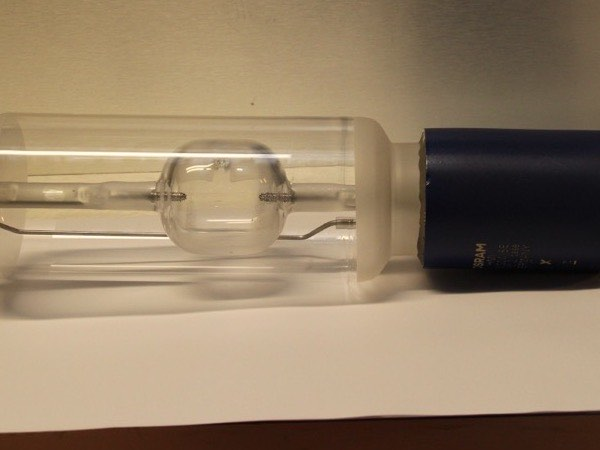
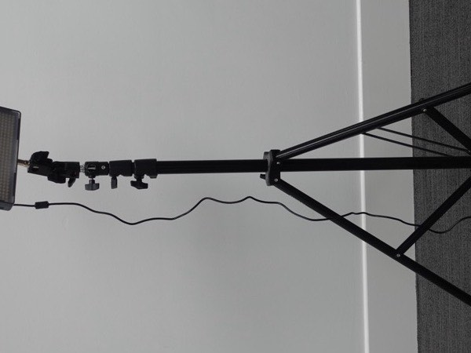
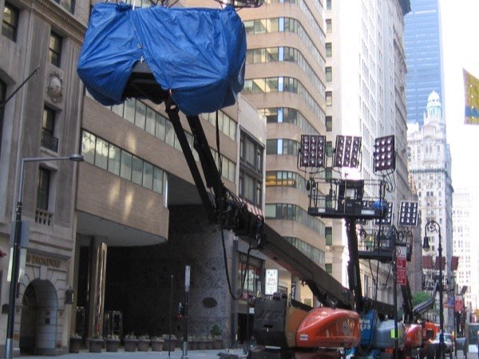
Analyser la lumière d'une scène de film
- Choisis une scène courte dans un film de ton choix — une scène d'intérieur de préférence.
- Essaie de déterminer : d'où vient la source principale ? Est-elle dure ou douce ? Chaude ou froide ?
- Cette lumière correspond-elle à l'ambiance émotionnelle de la scène ? Comment ?
La machinerie
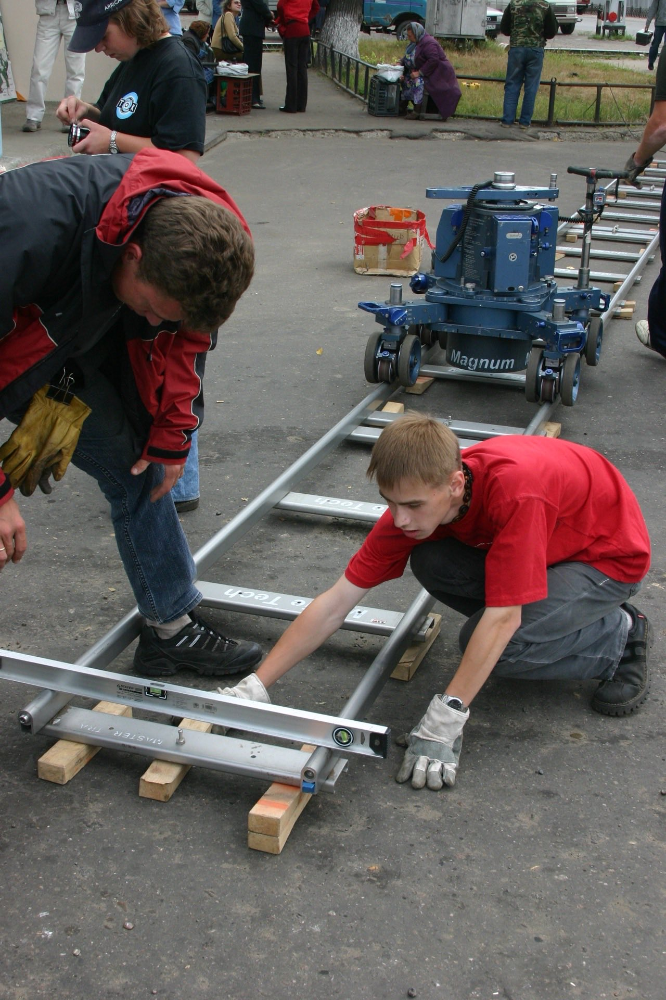
La machinerie de cinéma sert à déplacer la caméra de façon contrôlée. Chaque outil crée un type de mouvement différent — et chaque mouvement communique quelque chose au spectateur. Un réalisateur qui choisit un steadicam plutôt qu'un dolly fait un choix narratif autant que technique.
- Dolly sur rails — chariot monté sur des rails posés au sol. Permet des mouvements horizontaux ultra-fluides, parfaitement reproductibles. Standard pour les plans d'accompagnement d'un personnage qui marche ou les travellings d'installation. Lent à installer (poser les rails, niveler, ajuster), mais d'une précision absolue. Coût : location + machiniste spécialisé (dolly grip).
- Grue / Jib — bras motorisé qui lève la caméra en hauteur tout en pouvant la faire pivoter. Permet les plans "révélateurs" (on part d'un détail, on monte pour révéler le contexte) et les survols de décors. Une grue de grande taille (technocrane) peut avoir un bras de plus de 10 mètres. Très impressionnant visuellement, mais coûteux et lent à installer.
- Steadicam — système de stabilisation mécanique porté par un opérateur (le steadicam operator). Permet de suivre un sujet en mouvement avec une fluidité impossible à pied, sans les vibrations d'une caméra portée à l'épaule. Technique exigeante, l'opérateur s'entraîne pendant des années. Plus cher à louer qu'un dolly car il inclut un technicien hautement spécialisé.
- Drone — caméra aérienne pilotée. Permet des vues impossibles autrement (survols, descentes vertigineuses). En France, le pilotage de drones à des fins professionnelles est très encadré : brevet de télépilote, déclaration de vol, zones interdites. Ne pas improviser un vol de drone sans avoir vérifié la réglementation locale au préalable.
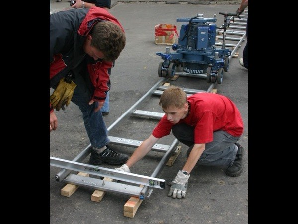
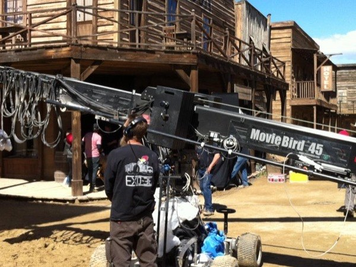
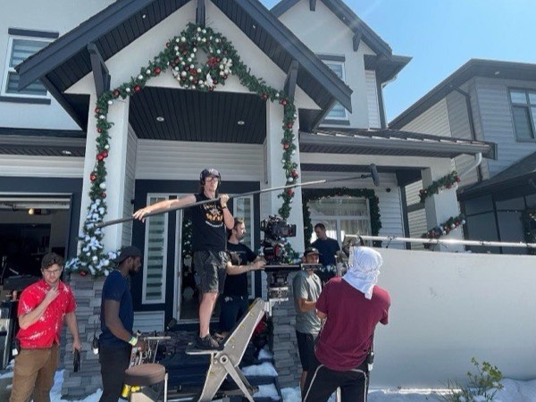
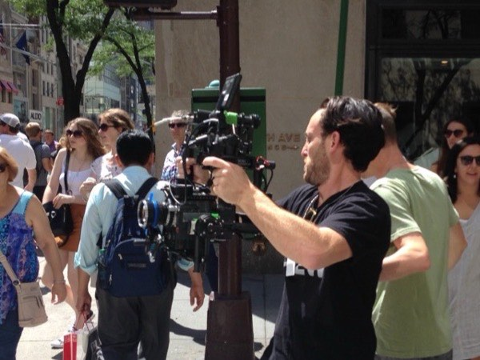
Lire les mouvements de caméra dans un film
- Dans un film de ton choix, identifie deux scènes avec des mouvements de caméra distincts.
- Pour chaque scène : quel outil a probablement été utilisé (dolly, steadicam, grue, à l'épaule) ? Qu'est-ce qui te le fait dire ?
- Ce mouvement sert-il la scène émotionnellement ? Comment ?
Le matériel son
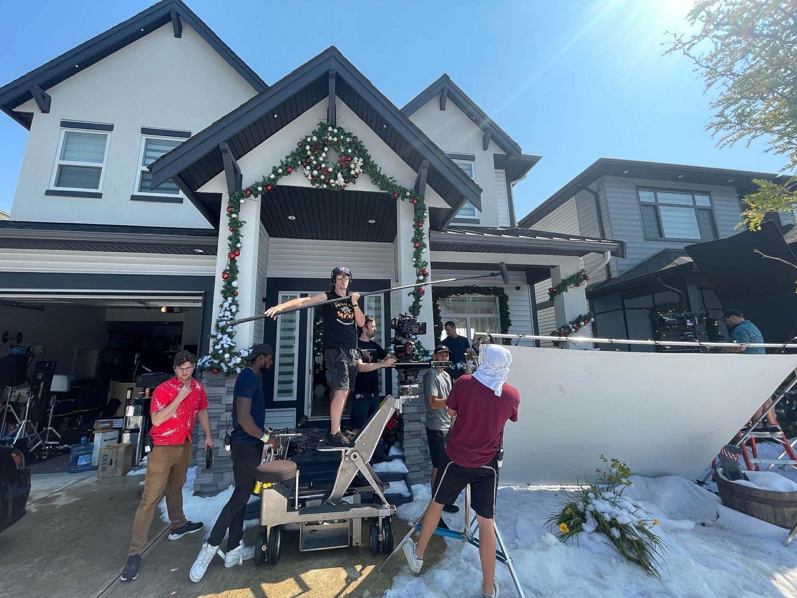
Le son est systématiquement sous-estimé par les débutants qui s'équipent en image d'abord. C'est une erreur coûteuse. Le spectateur pardonne une image légèrement sous-exposée, légèrement floue, légèrement bougée. Il ne pardonne pas un son mal enregistré. Un dialogue incompréhensible, saturé ou parasité détruit l'immersion d'un film en quelques secondes — quelle que soit la qualité de l'image.
- Perche + micro canon — le standard du plateau de fiction. Le micro-canon (hypercardioid) est pointé vers la source sonore par un perchman depuis hors cadre. Il capture le son direct avec un haut niveau de rejet du bruit ambiant. Efficace, discret, professionnel. Nécessite un ingénieur du son et un perchman.
- Micro HF (micro-cravate sans fil) — petit micro fixé sur le vêtement ou la peau du comédien. Utile quand la perche ne peut pas approcher (grand angle, extérieur venteux). Problèmes fréquents : frottements de tissu, saturation si le comédien s'éloigne de l'émetteur, interférences. Complémentaire à la perche, pas substitut.
- Enregistreur externe — le son n'est jamais enregistré directement dans la caméra sur un tournage professionnel. Il passe par un enregistreur externe dédié (Sound Devices, Zoom F-series) qui offre de bien meilleures préamplis et plus de contrôle. Le clap sert à synchroniser son et image en post-production.
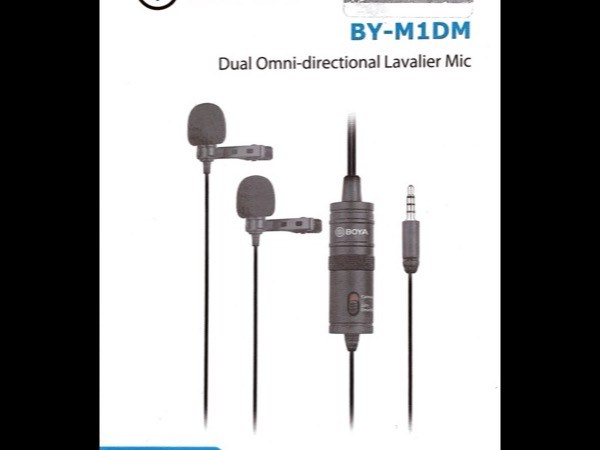
Analyser la qualité sonore d'un espace
- Choisis un espace où tu pourrais tourner une scène : un appartement, une rue, un café.
- Écoute attentivement pendant deux minutes sans faire quoi que ce soit : quels bruits parasites existent en permanence ? Quels sons interviennent de façon imprévisible ?
- Comment ces contraintes sonores changeraient-elles ta façon de planifier le tournage dans cet espace ?
Les supports de tournage
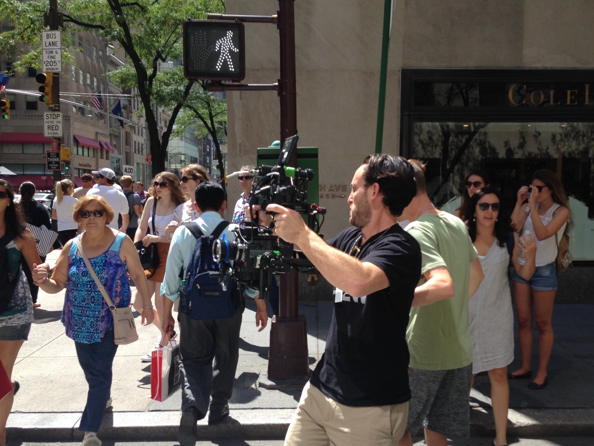
Comment la caméra est tenue détermine directement ce que le spectateur ressent. Ce n'est pas une contrainte technique — c'est une décision narrative. Avant de choisir un support, demande-toi ce que le plan doit "dire" au spectateur.
- Trépied — stabilité totale, plan statique ou avec panoramique/tilt contrôlé. Le plan d'observation par excellence. Raconte la distance, la maîtrise, parfois la froideur. Standard pour les plans d'établissement et les interviews. Accessible à tous les budgets.
- À l'épaule — mobilité maximale, look "documentaire" ou "urgence". Les vibrations légères créent une sensation de présence physique, de chaos maîtrisé. Utilisé délibérément dans les films de guerre, les thrillers, ou tout ce qui demande une impression d'être "dans l'action". Peut aussi être accidentel et nuire à l'image si c'est non intentionnel.
- Gimbal électronique — système motorisé (DJI, Moza, Ronin) qui stabilise la caméra portée à la main en compensant les mouvements involontaires. Résultat : un déplacement fluide sans les rails du dolly. Moins technique que le steadicam, moins coûteux. Devenu omniprésent dans les productions de taille moyenne. Donne un look "digital" reconnaissable.
- Slider / Mini-rails — mouvement court (20 à 100 cm) sur des rails légers. Permet un travelling élégant sur une petite distance, idéal pour animer un plan statique en le faisant "respirer" légèrement. Facile à transporter, rapide à installer.
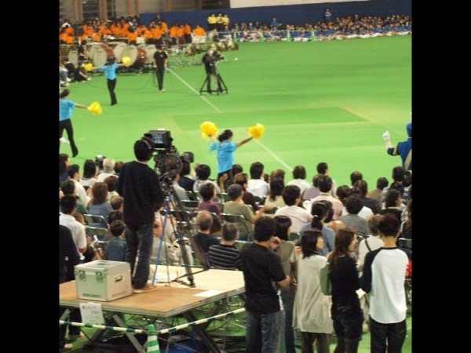
Observer comment le support change l'effet
- Filme la même scène courte deux fois : une fois posé sur un trépied, une fois à main levée (ou à l'épaule si possible).
- Regarde les deux versions. Quelle différence émotionnelle perçois-tu ? Laquelle fonctionne le mieux pour cette scène et pourquoi ?
- Dans quel type de film ou de scène utiliserais-tu chaque approche ?
Louer vs acheter
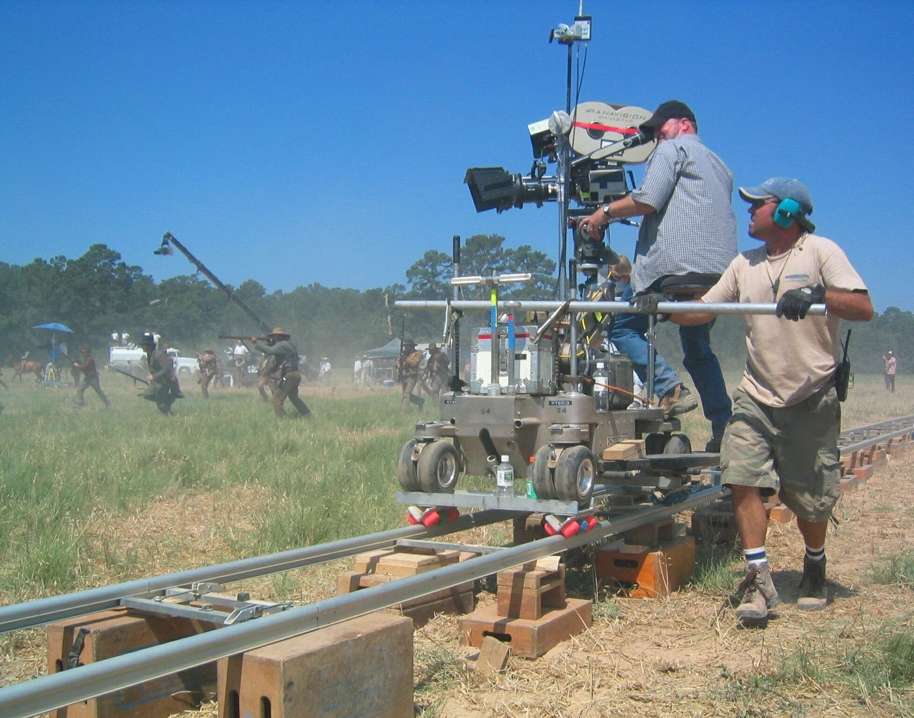
La première erreur des débutants est d'acheter du matériel coûteux qu'ils n'ont pas encore les moyens de maîtriser. La deuxième est de louer tout ce qu'ils pourraient posséder. La règle de base est simple : on achète ce qu'on utilise constamment et qui s'amortit rapidement ; on loue ce qui coûte cher, se démode vite, ou qu'on n'utilise que pour quelques tournages par an.
| Catégorie | Acheter ? | Pourquoi |
|---|---|---|
| Caméra cinéma haut de gamme | Louer | Obsolète en 3–5 ans, coût d'achat énorme, maintenance lourde |
| Objectifs de cinéma | Louer | Coût très élevé, les séries changent selon le projet |
| Machinerie lourde (dolly, grue) | Louer | Usage rare, stockage impossible, technicien inclus dans la loc |
| Trépied solide | Acheter | Usage quotidien, amortissement rapide, indispensable |
| Cartes mémoire, batteries | Acheter | Consommable, remplacé régulièrement, peu coûteux |
| Micro-canon d'entrée de gamme | Acheter | Améliore immédiatement le son, usage constant |
| Gimbal électronique | Selon usage | Si utilisé régulièrement, l'achat s'amortit vite |
Chiffre une journée de tournage
- Imagine que tu dois tourner une scène courte en intérieur : deux personnages, une heure de tournage effectif prévu.
- Consulte le site d'un loueur (TSF, Transpalux ou autre) et liste le matériel que tu louerais pour cette journée avec les tarifs.
- Quelle est la part de ce budget que tu aurais pu éviter si tu possédais certains éléments ? Qu'est-ce que tu achèterais en premier si tu avais 1 500 € ?
Construire sa trousse minimale viable
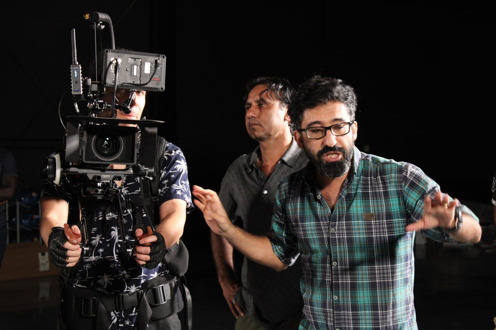
Commencer avec peu, c'est souvent commencer mieux. Un kit limité oblige à trouver des solutions créatives là où le matériel abondant incite à la paresse technique. Voici trois paliers selon le budget disponible — avec dans chaque cas, la priorité absolue.
- Palier "très limité" (0–300 €) — un smartphone récent (déjà en ta possession), un trépied léger compatible (15–30 €), un micro-cravate filaire (20–40 €), un réflecteur blanc/argenté (15 €). Ce kit suffit pour filmer des courts-métrages documentaires, des interviews, des exercices. L'apprentissage se fait sur la cadrage, la lumière naturelle et le son — pas sur la technique du matériel. Voir le manuel Smartphone Filmmaking pour aller au bout de ce palier.
- Palier "correct" (300–1 500 €) — une caméra mirrorless ou hybride entry-level (Sony ZV-E10, Fuji X-S10…) avec une optique fixe (50mm f/1.8 : 150–250 €), un trépied à tête fluide (80–150 €), un micro-canon compact (Rode VideoMicro : 60 €), des cartes mémoire et batteries. On peut produire du contenu professionnel régulier avec ce kit.
- Palier "confortable" (1 500–4 000 €) — une caméra mirrorless de niveau intermédiaire (Sony FX30, Blackmagic Pocket 6K G2), une ou deux optiques primes de qualité, un trépied vidéo sérieux, un gimbal, un micro HF. C'est le kit d'un créateur ou d'un documentariste professionnel indépendant.
Évalue ce que tu as et ce dont tu as vraiment besoin
- Liste le matériel que tu possèdes déjà (même un smartphone compte).
- En utilisant les trois paliers de ce chapitre : à quel palier te situes-tu ? Qu'est-ce qui manque dans ton palier actuel ?
- Quel serait ton prochain achat prioritaire — non pas le plus impressionnant, mais celui qui améliorerait le plus concrètement la qualité de ce que tu produis aujourd'hui ?
Trois directeurs de la photographie qui ont repoussé les limites du matériel.
Maîtriser le matériel ne signifie pas le subir — les meilleurs DPs utilisent ses limites comme des décisions artistiques.
Surnommé "The Prince of Darkness", Willis a poussé les pellicules de l'époque bien au-delà de leurs limites conventionnelles pour Le Parrain (1972) : des visages à peine éclairés, des ombres qui mangent les yeux des personnages — ce que les laboratoires lui déconseillaient formellement. Son parti-pris technique est devenu l'une des signatures visuelles les plus imitées de l'histoire du cinéma. La connaissance intime des limites du matériel lui permettait de les utiliser précisément là où d'autres les évitaient.
Triple Oscar (Gravity, Birdman, The Revenant — 2014, 2015, 2016). Sur Children of Men (2006), il a co-développé avec le réalisateur Alfonso Cuarón des techniques de plan-séquence en lumière naturelle qui n'existaient pas encore. Sur The Revenant (2015), il a tourné exclusivement à la lumière naturelle avec des caméras numériques ultra-sensibles — repoussant les limites de ce que le numérique pouvait capturer en conditions extrêmes.
Considéré par beaucoup comme le meilleur DP en activité. Connu pour son passage précoce au numérique et son implication dans les innovations de la caméra ARRI (notamment sur les tests du capteur ALEV 4 de l'Alexa 35). Sur 1917 (2019), il a développé avec l'équipe d'éclairage des solutions LED sur mesure pour simuler la lumière de fusées éclairantes en mouvement. Sa chaîne YouTube "Ask Roger" documente directement ses choix techniques sur chaque film.
Bibliographie et ressources.
Le petit quiz de fin de parcours.
NIVEAU 1 — BASES1. Pourquoi est-il utile pour un réalisateur de comprendre le matériel, même s'il ne l'opère pas lui-même ?
NIVEAU 1 — BASES2. Qu'est-ce que la "dynamique" d'une caméra ?
NIVEAU 1 — BASES3. Un capteur de plus grand format (par exemple Super 35 vs Micro 4/3) produit généralement quel effet sur la profondeur de champ ?
NIVEAU 2 — APPLICATION4. Qu'est-ce que l'ouverture (f/stop) d'un objectif contrôle concrètement ?
NIVEAU 2 — APPLICATION5. Quel est l'avantage principal d'une focale fixe (prime lens) par rapport à un zoom professionnel ?
NIVEAU 2 — APPLICATION6. Quel outil de machinerie permet de suivre un personnage en mouvement avec une fluidité impossible à pied, sans rails, dans des espaces complexes ?
NIVEAU 3 — ANALYSE7. Pourquoi les professionnels considèrent-ils qu'un mauvais son est plus rédhibitoire qu'une image imparfaite ?
NIVEAU 3 — ANALYSE8. Qu'est-ce qu'un gimbal électronique, et qu'est-ce qui le distingue d'un steadicam ?
NIVEAU 4 — EXPERT9. Quel type de matériel vaut-il mieux louer plutôt qu'acheter, selon ce manuel ?
NIVEAU 5 — MAÎTRISE10. Selon l'approche du "kit minimal viable" de ce manuel, quelle est la priorité absolue pour un débutant avec très peu de budget ?